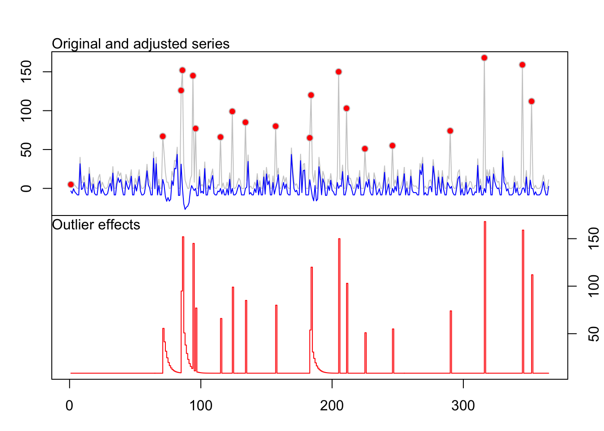

Capítulo 5 Punto de cambio (AMOC)
A continuación se usa la función cpt.mean() del paquete changepoint en R, específicamente con el método “AMOC” (At Most One Change), para detectar cambios en la media de una serie temporal.
## [1] 63El resultado muestra que la serie ts_diaria tiene una ruptura (cambio estructural) en el valor medio en el dato número 63. Esto sugiere que antes y después de ese punto, los valores de la serie tienen medias significativamente diferentes. El método “AMOC” busca una única ruptura (At Most One Change), y detectó que la mejor ubicación para dividir la serie en dos segmentos con medias distintas es en el punto 63. A continuación se gráfica el resultado para ver el punto de ruptura.
 La gráfica muestra la serie con una línea vertical en el punto donde ocurre el cambio, y líneas horizontales indicando las medias antes y después. En este caso el valor 63 de la serie corresponde a la fecha: 2007-03-04, indicando un cambio significatoco en este día. Esta información puede ayudar a decidir si necesitas transformar o dividir la serie antes de ajustar un modelo ARIMA.
La gráfica muestra la serie con una línea vertical en el punto donde ocurre el cambio, y líneas horizontales indicando las medias antes y después. En este caso el valor 63 de la serie corresponde a la fecha: 2007-03-04, indicando un cambio significatoco en este día. Esta información puede ayudar a decidir si necesitas transformar o dividir la serie antes de ajustar un modelo ARIMA.
5.1 Predicción
Estos son los datos de ausentismo laboral proyectados para los siguientes 12 días utilizando el paquete forecast para la serie diaria.
## Point Forecast Lo 80 Hi 80 Lo 95 Hi 95
## 53.14286 24.809061 -4.67089562 54.28902 -20.27664 69.89476
## 53.28571 21.308872 -8.17108486 50.78883 -23.77683 66.39458
## 53.42857 10.533910 -18.94604760 40.01387 -34.55179 55.61961
## 53.57143 13.827451 -15.65250608 43.30741 -31.25825 58.91316
## 53.71429 -1.257420 -30.73737741 28.22254 -46.34312 43.82828
## 53.85714 -1.495569 -30.97552647 27.98439 -46.58127 43.59014
## 54.00000 29.431127 -0.04883144 58.91109 -15.65458 74.51683
## 54.14286 24.809061 -4.67089710 54.28902 -20.27664 69.89477
## 54.28571 21.308872 -8.17108633 50.78883 -23.77683 66.39458
## 54.42857 10.533910 -18.94604908 40.01387 -34.55180 55.61962
## 54.57143 13.827451 -15.65250755 43.30741 -31.25826 58.91316
## 54.71429 -1.257420 -30.73737889 28.22254 -46.34313 43.82829plot(pred, main=" ", ylab="Horas", col="deepskyblue", xlab="Días")
title(main="Predicción de Ausentismo laboral") En esta grafica se especificar el horizonte de pronóstico de h periodos por delante para que se realicen las predicciones de ausentismo laboral. En este caso correspondiente a 12 días. En una análisis visual inicial, la predicción parace guardar concordancia con el pronóstico del resto de la serie.
A continuación se hace un análisis de los valores atípicos en la serie
La función tso() busca outliers que afecten la estructura de la serie, especialmente aquellos que pueden influir negativamente en el ajuste de modelos ARIMA. Identifica:
- AO = Additive Outlier: un valor atípico puntual.
- LS = Level Shift: un cambio repentino y permanente en el nivel de la serie.
- TC = Temporary Change: un cambio brusco pero transitorio.
## Warning in locate.outliers.iloop(resid = resid, pars = pars, cval = cval, :
## stopped when 'maxit.iloop' was reached
## Warning in locate.outliers.iloop(resid = resid, pars = pars, cval = cval, :
## stopped when 'maxit.iloop' was reached## Warning in locate.outliers.oloop(y = y, fit = fit, types = types, cval = cval,
## : stopped when 'maxit.oloop = 4' was reached En el gráfico se observa:
En el gráfico se observa:
- Línea gris: serie original (ts_diaria), sin ajuste.
- Línea azul: serie ajustada tras identificar y corregir los outliers.
- Puntos rojos: valores atípicos detectados (tipos como AO, LS o TC).
En general se observa que hay múltiples picos atípicos detectados a lo largo de la serie, donde los puntos rojos indican que en esos días hubo valores que no siguen el comportamiento esperado por el modelo ARIMA. Estos valores han sido ajustados en la línea azul, suavizando la serie. Esto indica que la serie contiene eventos que podrían ser anómalos, errores de registro, o situaciones excepcionales (como ausencias masivas, festivos especiales, etc.).
En el gráfico inferior se observa que varios outliers tienen efectos importantes y persistentes (altas barras).Esos valores distorsionan la dinámica general de la serie y deben considerarse al ajustar o interpretar un modelo de predicción.
.